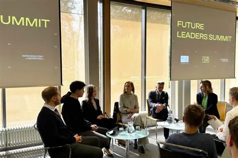

O događaju
Future Leaders Summit je dvodnevni događaj koji organizuje BHFF (Bosnia and Herzegovina Futures Foundation) s ciljem okupljanja mladih ljudi koji žele razvijati svoje liderske vještine i doprinijeti razvoju bh. društva. Summit je namijenjen studentima, svršenim studentima i mladim profesionalcima starosti od 18 do 30 godina, bez obzira na oblast kojom se bave.
Kroz panel diskusije, radionice i networking sesije, učesnici će imati priliku upoznati uspješne lidere iz biznisa, nauke i civilnog društva, razmijeniti ideje sa vršnjacima i steći praktična znanja koja mogu primijeniti u svojoj karijeri.

Šta vas očekuje na summitu?
- Panel diskusije sa liderima iz različitih oblasti
- Radionice o javnom nastupu, timskom radu i upravljanju projektima
- Networking sesije sa mentorima i alumnijima BHFF-a
- Certifikat o učešću za sve učesnike
Vrijeme, mjesto i prijava
Summit se održava 14. i 15. novembra 2026. godine, od 9:00 do 17:00 sati, u Hotelu Hills, Butmirska cesta 18, Ilidža, Sarajevo. Učešće je besplatno, a broj mjesta je ograničen na 150 učesnika.
Da biste se prijavili, popunite prijavni obrazac ispod i pošaljite ga najkasnije do 5. novembra 2026. Odabrani učesnici će dobiti potvrdu putem e-maila najkasnije 8. novembra. Više informacija o organizatoru možete pronaći na zvaničnoj stranici BHFF-a.